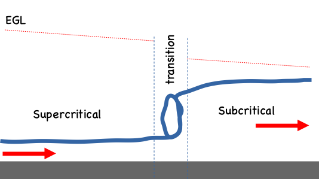
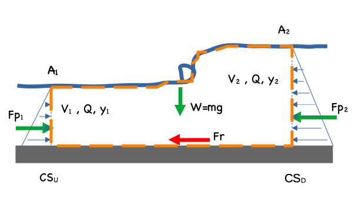
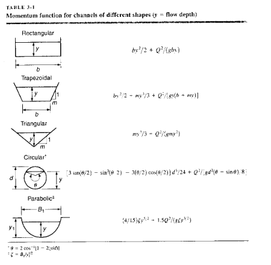
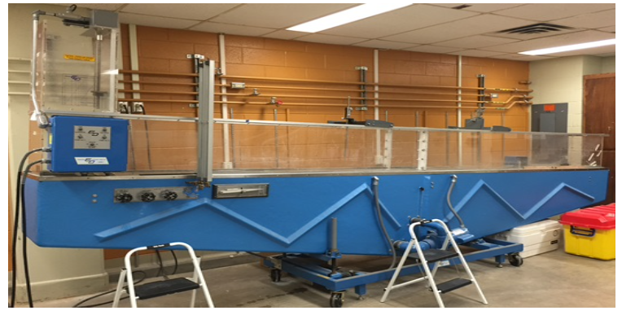

Lab 9. - Water Surface Profiles: Hydraulic Jump#
Course Website
Readings#
Videos#
Introduction#
Open-channel flow is an essential topic in hydraulics because it governs how water moves in rivers, canals, storm drains, and many other natural and engineered systems. In this experiment, we will investigate a hydraulic jump — a rapid transition between high-velocity, shallow flow (supercritical) and low-velocity, deeper flow (subcritical).
Using a recirculating flume equipped with depth gauges, a digital distance gauge, and a low weir, you will measure discharge, determine upstream and downstream depths, and compare your results with theoretical relationships for alternate and sequent depths.
This experiment connects the fundamental principles of fluid mechanics to a visually striking and practically important real-world phenomenon.
Purpose#
The purpose of this laboratory is to:
Create and observe a hydraulic jump in a controlled open-channel setting.
Measure the alternate and sequent depths of the flow.
Verify theoretical equations that describe hydraulic jumps and energy loss across the transition.
Through this activity, you will strengthen your understanding of the momentum principle in open-channel flow and see how energy dissipation and flow control are achieved in hydraulic structures.
Background and Theory#
Open-Channel Flow#
An open channel is a flow system with a free surface exposed to the atmosphere and primarily driven by gravity.
While gravity provides the driving force, open-channel behavior is also governed by momentum — the interplay between flow velocity, cross-section, and boundary conditions.
Common examples include:
Natural channels: rivers, streams, brooks, creeks, and similar surface flows.
Engineered channels: ditches, canals, aqueducts, and storm or sanitary sewers.
Applications of open-channel hydraulics include:
Culvert, bridge, and spillway design
Floodway analysis and flood prediction
Sediment and contaminant transport
Coastal and storm-surge modeling
The Manning’s equation is often used to estimate steady uniform flow:
\( Q = \frac{K_n}{n} A R^{2/3} S^{1/2} \)
where
\(K_n\) = unit conversion factor (1.0 for SI, 1.49 for English),
\(n\) = Manning’s roughness coefficient,
\(A\) = flow area,
\(R = A/P_w\) = hydraulic radius, and
\(S\) = energy slope.
Steady Rapidly Varied Flow#
Momentum describes how mass in motion resists change. In open-channel hydraulics, momentum analysis is especially useful when the energy equation is invalid — such as during abrupt transitions like hydraulic jumps.
A key advantage of the momentum approach is that it depends only on external forces and momentum fluxes, not on the detailed internal turbulence of the flow.
Hydraulic Jump#
A hydraulic jump occurs when supercritical flow (fast and shallow) transitions abruptly to subcritical flow (slow and deep) over a short distance.
 
This transition dissipates energy and creates intense turbulence, which is useful in design of energy dissipation, chemical mixing, or erosion control facilities. Hydraulic jumps are often intentionally formed in armored channel sections or stilling basins to protect downstream structures from erosion.

To describe the jump, we apply the momentum equation across a short control volume:
\( \sum F_x = \rho Q (V_2 - V_1) \)
The pressure forces are hydrostatic, so:
\( F_p = \rho g \bar{h} A \)
Substituting and simplifying gives the momentum function:
\( (h_1 A_1) + \frac{Q^2}{g A_1} = (h_2 A_2) + \frac{Q^2}{g A_2} \)
This relation states that momentum is balanced across the jump:
\( M_1 = M_2 \)
The two depths that satisfy this condition — \(y_1\) (upstream) and \(y_2\) (downstream) — are known as the alternate and sequent depths, respectively.
These depths are unique for a given discharge and channel geometry.

The flow in the jump region is highly turbulent, and frictional losses within the short control volume are typically negligible compared to the overall change in momentum.
Note
Although open-channel flow is often described as “gravity driven,” it’s more accurate to say that open flows are momentum dominated — gravity provides the potential energy, but inertia and boundary conditions determine the flow pattern.
Open flow can even move briefly uphill if momentum is high enough, though not for long!
Laboratory Apparatus#
The apparatus is a recirculating water flume (photo below), width 1 ft, comprising a supply tank (in the flume base) a head tank, two pumps, rectangular channel with side rails, depth gauges, total head tubes, bed tappings and downstream control gate.

The experiment is comprised of:
measuring depth over a low height weir and determine discharge in the flume
creating a hydraulic jump, stabilizing it (my varying slope and slucie gate opening), then measuring the alternate and sequent depths and comparing these to calculated values based on the discharge.
Discharge Measurements#
The flowrate is determined using the narrow-crested weir in the channel (which is also employed to induce the jump).
Narrow-Crested Weir Discharge Formula#
A narrow-crested weir is used to measure discharge by relating the upstream water depth (head) to flow rate.
The general discharge relationship is:
\( Q = C_d \, L \, \sqrt{2g} \, h^{3/2} \)
where:
Symbol |
Description |
Units |
|---|---|---|
\(Q\) |
Discharge (flow rate) |
m³/s (SI) or ft³/s (US) |
\(C_d\) |
Discharge coefficient (empirical) |
— |
\(L\) |
Effective width (length of weir crest) |
m or ft |
\(g\) |
Acceleration due to gravity |
9.81 m/s² or 32.2 ft/s² |
\(h\) |
Head above the weir crest |
m or ft |
Typical Coefficients#
For fully aerated, free-flow conditions:
\( C_d \approx 0.60 \text{ to } 0.65 \)
In many laboratory flumes, a value of \(C_d = 0.611\) (for metric units) gives good agreement when the nappe (jet) is fully aerated.
If the nappe becomes non-aerated (submerged), the discharge will be less than predicted; corrections are applied using a submergence coefficient \(C_s\):
\( Q_{\text{submerged}} = C_s \, Q_{\text{free}} \) with \(C_s < 1.0\) depending on tailwater depth.
Experimental Use#
Measure the head \(h\) upstream of the weir crest, away from the influence of drawdown (usually 3 × \(h\) upstream).
Record multiple heads at steady discharges.
Plot \(Q\) vs. \(h^{3/2}\); the slope gives \(C_d L \sqrt{2g}\).
Compare experimental \(C_d\) with literature values.
Note
In your hydraulic jump lab, the weir provides a convenient and repeatable way to measure discharge before and after changing flow conditions.
Accurate measurement of \(h\) is essential for computing the jump’s sequent and alternate depths.
Flow Depth Measurements#
Flow depth measurements are made using a digital distance gauge mounted on a movable rail above the flume.
If the battery is depleted, the gauge can still be used as a manual point gauge — simply read depths from a standard ruler aligned with the device’s scale at different settings.
The digital gauge reports the distance from the top of the rail to the pointer (\(h_D\)), which in this setup represents the distance to the water surface.
The total channel depth is \(h_b = 44 \, \text{mm}\).
Therefore, the flow depth is calculated as:
\( h_{\text{flow}} = h_b - h_D \)
Alternatively, if the gauge is positioned near the middle of its travel range and zeroed at the top of the weir, the flow depth can be expressed as:
\( h_{\text{flow}} = h_D + P \)
where \(P\) is the height of the weir above the channel bottom.
This second method is particularly useful when the water depth varies significantly during the experiment.
Suggested Procedure#
1. Zeroing the Depth Gauge#
Position the depth gauge directly over the weir.
Move the transit (the vertical sliding carriage) to approximately the middle of its motion range.
Lower the point gauge until the tip just touches the top of the weir.
Tighten the adjustment screw gently to lock the pointer in place.
Move the gauge slightly upstream and verify that it can still reach the channel bottom.
The gauge is now zeroed — all subsequent readings will be relative to the weir crest.
2. Forming and Measuring the Hydraulic Jump#
Ensure the flume slope is set to approximately 4% (as pre-set by the instructor or TA).
This slope may appear steep, but it produces a well-defined jump within the short flume.Start both recirculating pumps. The valves should already be fully open; verify with the instructor.
Raise the sluice gate to about 50 mm above the channel bottom to establish flow.
Monitor the head tank — if it fills too quickly or the level rises above the rail, raise the gate slightly higher.
The target condition is steady flow with the head tank level just below the rail height.
Adjust the sluice gate opening and/or channel slope until a visible hydraulic jump forms roughly midway between the head tank and the weir.
The exact position is not critical, but it should be far enough downstream from the manometers to allow easy use of the depth gauge.
Allow the flow to reach steady conditions.
Measure the upstream (alternate) depth approximately halfway between the headgate and the jump.
Measure the downstream (sequent) depth at a location where the surface appears relatively stable—typically about halfway between the jump and the weir.
Note
The flume is too short for the surface oscillations to fully dissipate.
Select a downstream measurement point that appears stable, but no closer than 2–3 weir heights (\(P\)) from the weir crest.
Deliverables#
Laboratory Report
The laboratory report should include the following sections:
Title Page: Include the lab title, group members, date, and course information.
Abstract: Provide a concise summary of the objectives, methods, results, and conclusions.
Introduction: Outline the purpose of the lab, focusing on the significance of hydraulic jumps in open channel flow.
Apparatus and Methods:
Description of the recirculating flume and its components (e.g., pumps, digital gauge, manometer, tailgate).
Detailed summary of procedures for each part of the experiment, emphasizing flow measurement and hydraulic jump stabilization.
Data and Results:
Present depth measurements in tabular form.
Analysis:
Evaluate the observed alternate and sequent depths relative to theoretical predictions.
Evaluate the observed jump length relative to empirical predictions.
Evaluate energy lost in the jump.
Address any discrepancies and potential sources of error.
Discussion:
Highlight the practical significance of the findings in hydraulic design applications.
Interpret the relationship between flow dynamics and channel characteristics.
Evaluate the precision of measurements, including comparisons of depth readings from manual and digital methods (if applicable).
Conclusion: Summarize the key results and their implications for open channel hydraulics.
Appendices: Include raw data, calibration charts, and detailed calculations.